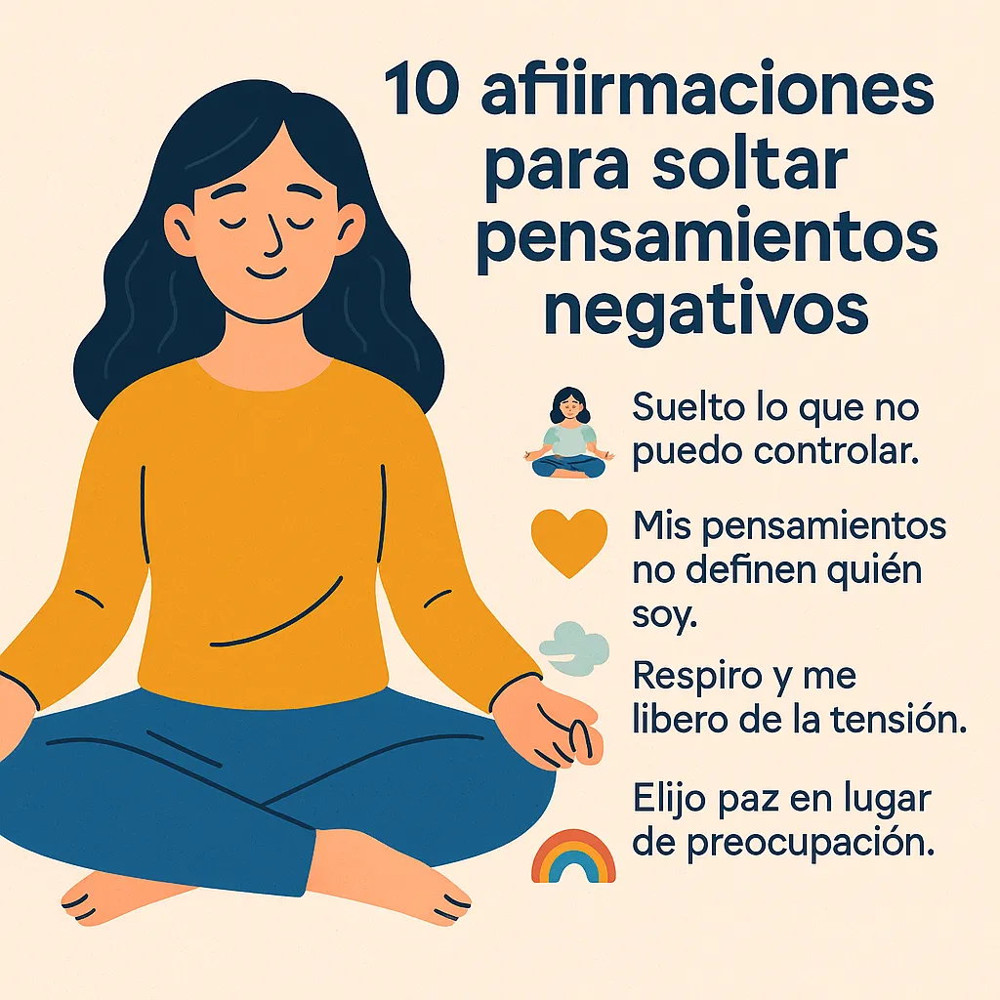

10 afirmaciones para soltar pensamientos negativos
Los pensamientos negativos pueden convertirse en un bucle mental difícil de romper. Pero existen herramientas simples y efectivas para reemplazarlos. Las afirmaciones positivas son frases poderosas que puedes repetir para cambiar tu enfoque mental y recobrar la paz interior.
¿Por qué usar afirmaciones?
Las afirmaciones actúan como anclajes emocionales. Al repetirlas con intención, puedes:
- Reprogramar pensamientos intrusivos.
- Reducir la ansiedad y la autocrítica.
- Fomentar el autocuidado emocional.
- Elevar tu autoestima y claridad mental.
Cómo usarlas correctamente
No se trata solo de repetirlas. Aquí te damos algunos consejos:
- Elige una o dos que conecten contigo.
- Repite en voz alta o mentalmente por la mañana y antes de dormir.
- Combínalas con técnicas de respiración o meditación guiada.
- Escríbelas en tu diario de ansiedad o en notas visibles.
🌿 10 afirmaciones para dejar ir pensamientos negativos
- 🧘♀️ “Suelto lo que no puedo controlar.”
- 💛 “Mis pensamientos no definen quién soy.”
- 🌬 “Respiro y me libero de la tensión.”
- 🌈 “Elijo paz en lugar de preocupación.”
- 🌱 “Cada día es una nueva oportunidad para empezar.”
- 🕊 “Estoy a salvo en este momento.”
- 🧠 “Puedo observar mis pensamientos sin identificarme con ellos.”
- 💡 “Mi mente está aprendiendo a estar en calma.”
- 🌸 “Dejo ir la necesidad de tener siempre la razón.”
- 🌟 “Estoy presente y en paz aquí y ahora.”
Cuándo usarlas
Estas frases pueden ayudarte en momentos de:
- Estrés intenso (consulta también cómo hacer una pausa consciente).
- Ansiedad o sobrepensamiento (lee cómo gestionarlo aquí).
- Días difíciles en los que necesitas motivación.
Haz de ellas un hábito
Integra estas afirmaciones en tu rutina como un ejercicio para calmar la mente. Puedes usarlas mientras caminas, al despertar o antes de dormir. La repetición crea un impacto emocional profundo.
✅ Léelas y elige tu favorita. Escríbela, repítela y deja que te acompañe cada día.